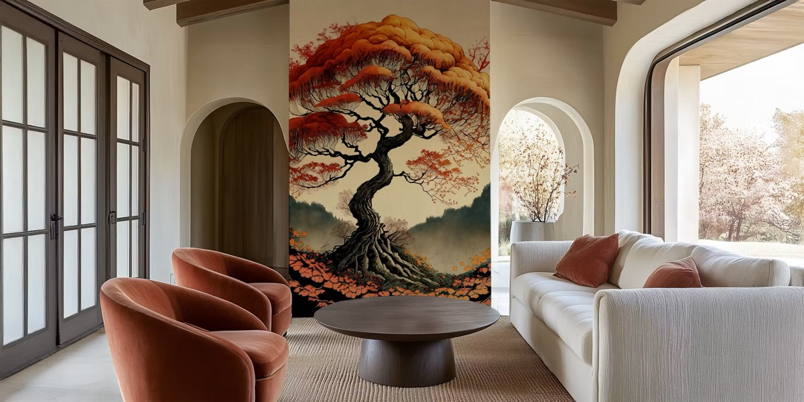
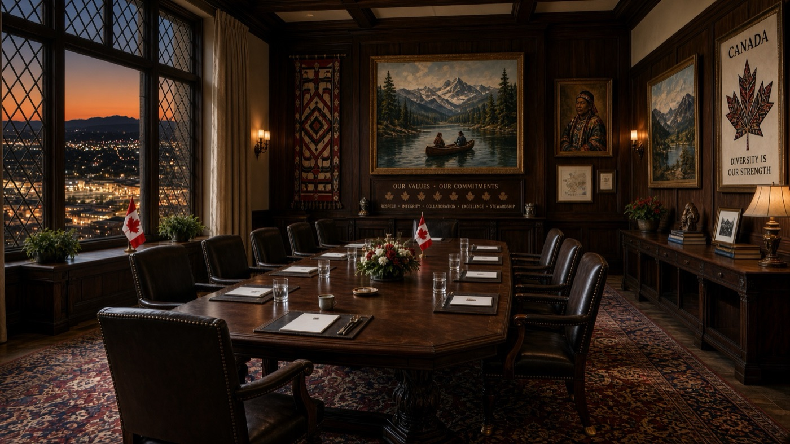
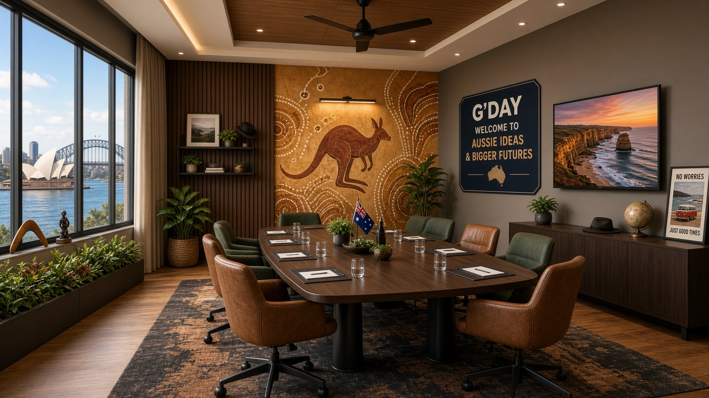
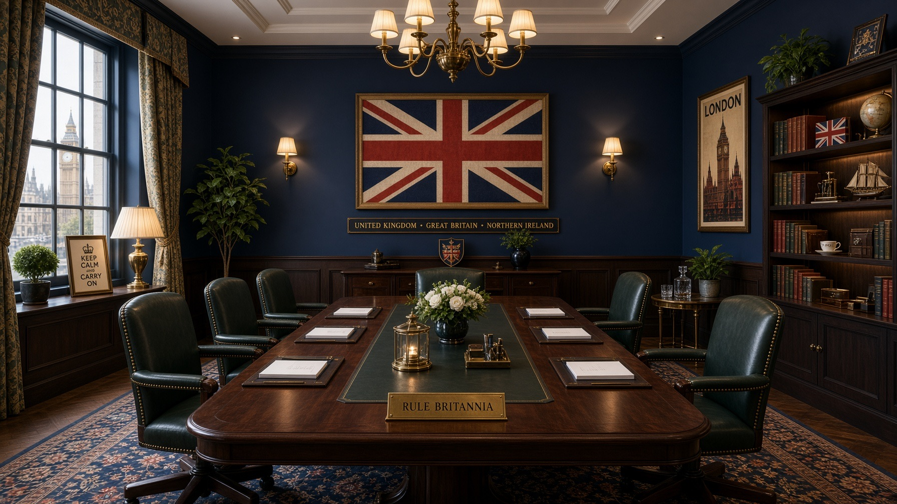
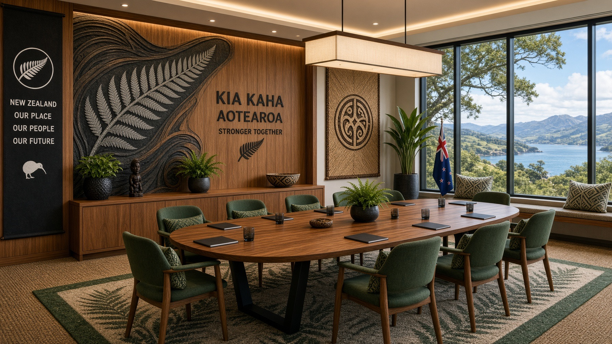
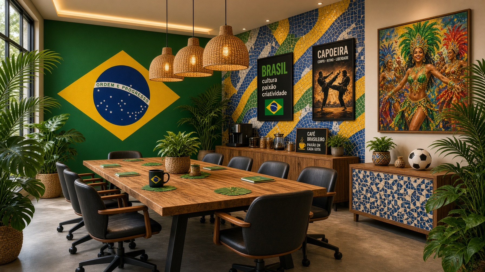
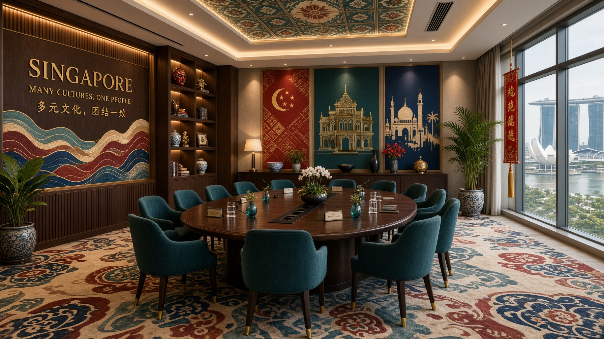
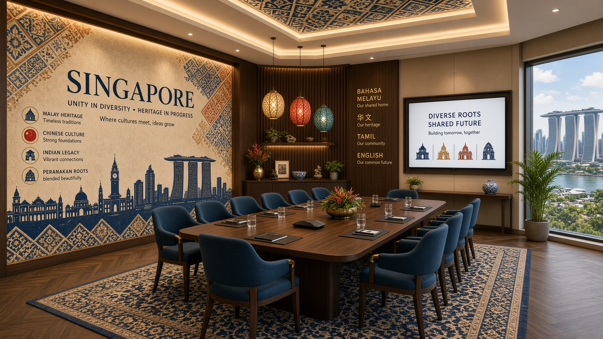
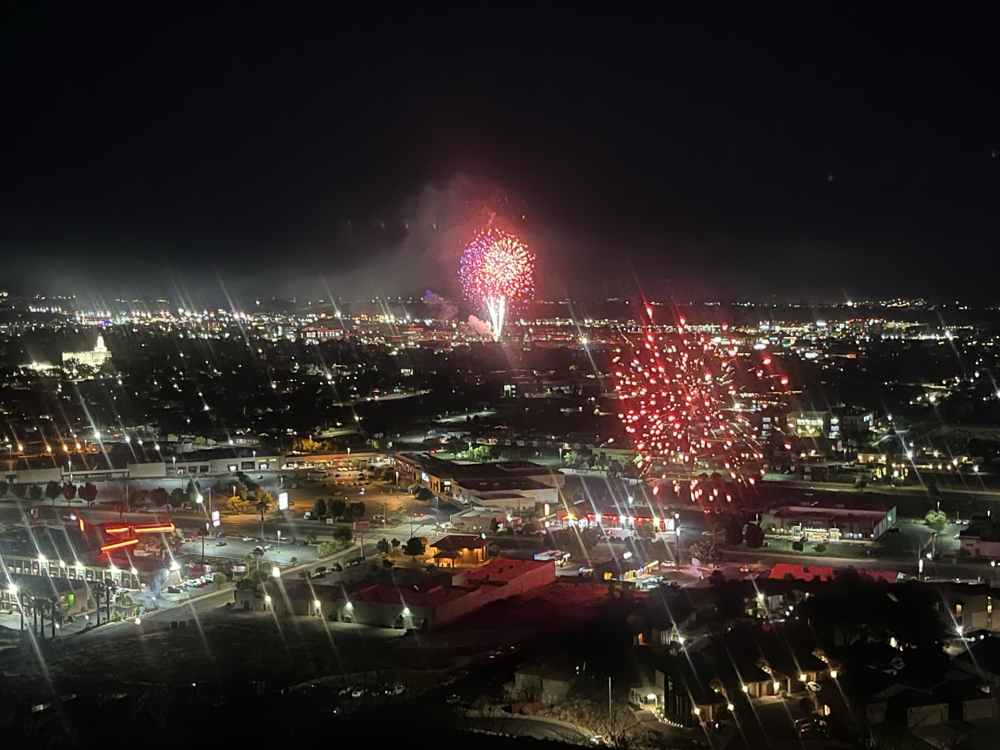

Culture
What the building should carry
Culture is the reason a headquarters is worth building instead of leasing. These are the threads of Zonos culture the building could express, collected from years of working on this mesa. How literally each one shows up is an open, collaborative question.
The world, literally
Countries on the doors
Zonos exists to make global trade work, and the offices say so literally: meeting rooms are named after countries. You book Japan and everyone knows where to go. The idea under exploration for the new building takes it further: rooms, maybe whole floors, that carry a country or region in their furniture, art, and detail, so moving through the building feels a little like moving through the world the company serves. Baggage-tag name tags, Tokyo-style signage, and similar touches have all been floated; the depth of the treatment is open.


Concept studies, more countries
AI concept studies of what a full country treatment could be: architecture, art, materials, and language from one place, with the country named on the wall. Directions to react to, not designs.






Merchants visit from the countries on those doors. Rooms with real country detail show a visiting merchant the company works in their world.
The sci-fi thread
Optimism about the future
The values are stated the same way in every telling: Do Something New. Own Customer Success. Reach Everyone. Never Give Up, Never Surrender. The last one is borrowed with love from Galaxy Quest.
The logo history runs from a spaceship to a cipher based on a crop circle: the original iGlobal mark was a flying saucer beaming up a letter, and the 2016 homepage quoted Yoda, the Terminator, and Star Trek. Star Trek optimism is a genuine cultural touchstone here: the future as something a team builds toward. How much of that lands in the architecture is genuinely undecided; the current thinking is that the feeling matters more than the props. Ideas floated so far run from cipher-shaped door handles to an alternate-universe room in the spirit of Meow Wolf's Omega Mart, an ordinary door that opens into something else.
How the team runs
Player coaches and owned outcomes
- No layer of people managers. The team runs on player coaches who do the work they guide. The building equivalent: nobody designs a floor plan around a corner-office hierarchy.
- You own the customer's success is a stated value, and it is why customer-facing energy (sales calls on the floor, visiting merchants, a demo-worthy space) keeps showing up in the program thinking.
- Do new is the other one, and it is the honest reason the company keeps exploring ideas like the stepped edge and the country floors instead of copying an office template.
The community
The community at the stairs
The public stairs near the site became a community institution on their own, and the new stairs will land at the Zonos corner. The culture ideas that grew from that: a reward at the top of the climb (coffee, shade, water), an annual community sunrise event on the east decks, and a learning center for kids that is more school than daycare, possibly in ground-floor space run by an operator. St. George heritage runs through the thinking too; the stone for the St. George temple was quarried from this mesa, and the site's story is part of the building's story.
The mesa already has one tradition the building should be designed around: on the Fourth of July, we bring our families up to the rim and watch the fireworks go off across the whole valley below. From the rim you see every fireworks show in the valley at once. Family nights on the decks are a program item.
